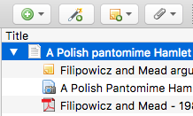
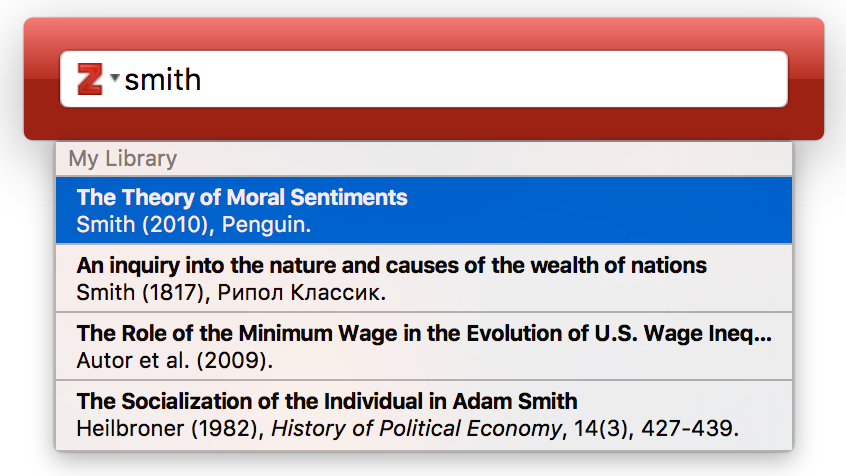
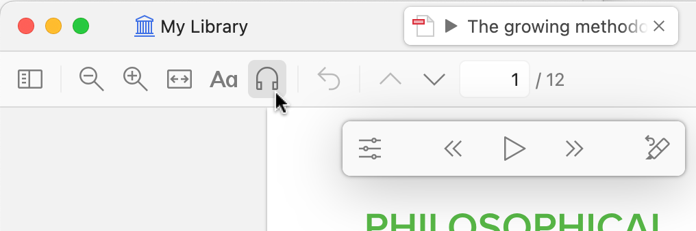

Zotero pour une bibliographie ouverte, collaborative et reproductible
PSF CREONS · Jeudi 28 mai 2026Dépôt GitHub
28 mai 2026
Objectif de la séance
À la fin de l’atelier, vous devez pouvoir :
installer un environnement Zotero fonctionnelimporter et corriger une référenceorganiser et partager une petite bibliothèqueciter dans un document et produire une bibliographietransmettre cette formation dans un format court
Insister dès l’ouverture sur la logique de formation de formateurs.
Le verbe important à ajouter est transmettre : l’objectif n’est pas seulement de savoir utiliser Zotero, mais d’être capable de refaire une version plus courte de cette séance, par exemple en 2 heures, dans son institution ou son équipe.
Pourquoi un logiciel de gestion bibliographique ?
En recherche, et en particulier en thèse, un tel outil devient vite essentiel pour :
retrouver vite ses sourcesgarder une trace propre des lecturesciter sans bricoler à la finrendre la revue de littérature plus rigoureuse
Cette diapo doit être générale, pas spécifique à CREONS.
L’idée est de partir des problèmes concrets de la recherche : accumulation de PDF, références dispersées, citations incohérentes, temps perdu au moment de la rédaction. C’est particulièrement parlant pour les doctorant·es.
Pourquoi Zotero ?
Zotero est un bon choix parce qu’il est :
libre , gratuit , multiplateforme simple à prendre en mainbien intégré au navigateur et au traitement de texte
adapté au partage et au travail collectif
assez robuste pour la recherche, assez simple pour être transmis

Source : documentation officielle Zotero.
Ne pas présenter Zotero comme le seul outil possible, mais comme le plus pertinent pour ce public.
Mettre en avant la combinaison décisive : gratuité, logiciel libre, simplicité d’usage, compatibilité multi-OS, connecteur navigateur, insertion dans les traitements de texte, groupes partagés.
Installer l’environnement de travail
Avant de commencer, il faut vérifier trois briques :
Zotero Desktop
le connecteur Zotero du navigateur
Word ou LibreOffice pour tester l’insertion de citations
En plus, si possible :
un compte Zotero pour la synchronisation et le partage
Préciser que beaucoup de blocages viennent d’une installation incomplète.
Le minimum à tester en séance est : application ouverte, connecteur visible dans le navigateur, menu Zotero disponible dans Word ou LibreOffice. Mentionner le compte Zotero comme utile, sans en faire un prérequis absolu pour toute la séance.
Le cœur de l’atelier
Le noyau de la séance tient en sept verbes :
installer
importer
corriger
organiser
partager
citer
transmettre
Cette diapo sert de carte de la séance.
Le dernier verbe, transmettre, doit être explicité : il annonce déjà la fin de l’atelier et la manière dont les participant·es pourront refaire cette formation auprès de collègues ou d’étudiant·es.
Importer
Sources à tester pendant l’atelier :
DOI / ISBN
page de revue ou portail documentaire
PDF
page web
Montrer plusieurs portes d’entrée, mais rappeler que l’import automatique n’est qu’un point de départ.
Si le temps est limité, privilégier un DOI, une page de revue, un PDF et une page web. Ce sont les cas les plus utiles pour une formation courte réplicable.
Corriger
Une référence importée n’est pas une référence validée.
Points à vérifier :
type de document
auteur ou institution
année
titre
revue ou éditeur
DOI ou URL
Probablement la diapo la plus importante pédagogiquement.
Faire passer l’idée que la valeur de Zotero ne vient pas de l’automatisation seule, mais de la combinaison entre import rapide et vérification humaine. Montrer un ou deux exemples de notices incorrectes.
Organiser
Bonnes pratiques minimales :
utiliser des collections simples
éviter de multiplier les tags
repérer les doublons
garder des règles communes dans le travail collectif
Faire distinguer collections, tags, notes et doublons.
Conseil de transmission : quand ils refont la séance en 2h, il faut rester sur une structure simple et éviter les raffinements inutiles.
Partager
Les groupes Zotero sont utiles pour :
construire une bibliographie commune
faire circuler les références entre sites
capitaliser et retransmettre plus facilement
Relier cette diapo à la logique de coopération et de mutualisation.
Expliquer qu’un groupe Zotero n’est pas seulement un espace technique : c’est un support de travail collectif, de circulation des références et de capitalisation pédagogique.
Citer et produire une bibliographie
À tester pendant l’atelier :
insérer une citation dans Word ou LibreOffice
changer de style, générer une bibliographie
dans Quarto / R Markdown : .bib + @citekey
dans LaTeX : export BibTeX / BibLaTeX + \cite{}
éviter les corrections manuelles trop tôt dans le document

Source : documentation officielle Zotero.
Cette diapo permet de fermer la boucle : on ne gère pas une bibliothèque pour elle-même, mais pour écrire, citer et partager.
Si possible, faire une démonstration très courte dans un document déjà préparé.
Mentionner ici qu’au-delà de Word et LibreOffice, Zotero s’insère très bien dans des workflows d’écriture scientifique plus techniques : Quarto, R Markdown et LaTeX. Pour Quarto/LaTeX, le bon réflexe est d’exporter une bibliothèque .bib propre depuis Zotero, idéalement de façon stable.
Exercice fil rouge
Par petit groupe :
importer 5 références
corriger les champs essentiels
ajouter un tag commun
rédiger une note courte
repérer les doublons
générer une bibliographie finale
L’exercice doit rester faisable et vérifiable.
Insister sur la qualité plutôt que la quantité. L’objectif n’est pas de collecter beaucoup, mais de faire correctement les gestes clés que les participant·es pourront ensuite réenseigner.
Points de vigilance
le connecteur navigateur peut échouer
les PDF sont souvent mal reconnus
les rapports sont souvent mal typés
le suivi des modifications peut casser les codes de champs des citations
mieux vaut 5 références propres que 20 références sales
Cette diapo sert aussi à normaliser les difficultés : les problèmes techniques sont fréquents et ne signifient pas que l’outil est mauvais.
Prévoir un plan B simple : import manuel, DOI, ISBN, ou ajout direct d’une notice.
Ajouter un avertissement très concret sur le Suivi des modifications dans Word ou LibreOffice : si on modifie un appel de citation en mode révision, on peut supprimer sans le voir les codes de champs Zotero et désorganiser ensuite la bibliographie après Refresh.
Sortie attendue
À la fin de l’atelier, chaque participant·e repart avec :
une installation fonctionnelle
une mini-bibliothèque propre
une citation et une bibliographie générées automatiquement
un canevas réutilisable localement en 2h
Rappeler que la sortie attendue n’est pas seulement individuelle.
Chaque personne doit repartir avec quelque chose qu’elle peut réutiliser dans sa recherche et retransmettre à d’autres.
Ressources complémentaires
Après la séance, on pourra produire :
une fiche exercice
une fiche mémo de bonnes pratiques
une version courte réutilisable localement
Conclure sur les livrables et la suite du travail.
Cette diapo peut aussi servir à annoncer ce qui sera partagé après l’atelier.
Index des annexes
stockage Zotero avec une adresse IRD
tour d’horizon des applications mobiles
veille récente : Retraction Watch, Zotero 7 à 9
extension du stockage via WebDAV
zoom sur Zotero 9
extensions et astuces utiles
retours pédagogiques et usages avancés
Cette diapo permet de signaler clairement que la suite est optionnelle.
Elle est utile si tu veux garder un cœur de séance resserré et réserver les questions plus techniques ou prospectives à la fin.
Annexe · Stockage Zotero avec une adresse IRD
À mentionner aux participant·es concerné·es :
adresse IRD = stockage illimité sur Zotero
si le compte utilise déjà l’adresse IRD, l’avantage s’applique automatiquement
sinon, ajouter l’adresse IRD comme adresse secondaire dans le profil
Rappel utile : sans cela, le stockage gratuit des fichiers joints est limité à 300 Mo.
Présenter cette information comme un bonus pratique en annexe.
Elle est utile pour les collègues IRD, mais ne doit pas alourdir le cœur de la séance. Bien distinguer le stockage des métadonnées et celui des fichiers PDF.
Annexe · Alternative WebDAV pour les fichiers joints
Il est aussi possible d’étendre le stockage des fichiers joints avec un serveur WebDAV, par exemple un service institutionnel.
piste à explorer :
IRD Drive de l’UMI SOURCE, si cette solution est disponible et pertinente localement
ressource de référence : https://zotero.hypotheses.org/4791
Mentionner cette piste comme option avancée, pas comme prérequis.
Elle peut intéresser les personnes qui gèrent beaucoup de PDF ou qui souhaitent un stockage institutionnel. Ne pas ouvrir ce point trop tôt dans la formation principale.
Annexe · Tour d’horizon des applications mobiles
Zotero existe aussi sur mobile :
iOS : synchro, lecture/annotation PDF, capture depuis Safari, scan DOI/code-barresAndroid : synchro, annotation PDF, ajout par identifiants, récupération de métadonnées PDF, scan ISBN
À retenir :
utile pour lire, annoter et capturer des références en mobilité
pratique pour reprendre ensuite son travail sur ordinateur
bon argument pour montrer que Zotero accompagne tout le cycle documentaire
sur Android, un réglage permet aussi d’utiliser un stockage WebDAV compatible
le scan d’ISBN ouvre des usages intéressants pour rétro-cataloguer rapidement une petite bibliothèque papier
Rester concret : le mobile n’est pas le cœur de la formation, mais c’est un bon levier d’adoption.
Sur iOS, tu peux mentionner la génération de bibliographies et la capture via le bouton Partager. Sur Android, l’ajout par identifiants, la récupération de métadonnées PDF, le WebDAV et le scan d’ISBN sont particulièrement parlants.
Annexe · Fonctionnalités avancées et veille Zotero
Quelques évolutions intéressantes à signaler :
articles rétractés : Zotero peut signaler des publications rétractées grâce à l’intégration avec Retraction Watch et avertit aussi au moment de citerZotero 7 : interface revue, lecteur enrichi, EPUB et snapshots annotablesZotero 8 : citation améliorée, annotations visibles, renommage continu des fichiersZotero 9 : lecture audio, Recently Read , annotations insérées dans les traitements de texte
Pourquoi c’est intéressant pédagogiquement :
Zotero évolue vite
certaines fonctions renforcent la lecture critique et la traçabilité
d’autres améliorent directement la rédaction et le travail collectif
Cette diapo sert de veille légère, pas de catalogue complet.
Pour les articles rétractés, préciser que Zotero s’appuie sur Retraction Watch, signale les items concernés dans la bibliothèque et avertit aussi au moment de citer. Pour les nouveautés, choisir 2 ou 3 exemples maximum à commenter oralement selon le temps.
Annexe · Zoom sur Zotero 9
Points saillants de la version 9 :
Lecture à haute voix sur PDF, EPUB et captures webLectures récentes pour retrouver vite un document luAjouter une annotation directement dans Word ou LibreOfficeAjouté par / Modifié par dans les bibliothèques de grouperenommage par groupe pour harmoniser les pratiques collectivesconnexion via le Web plus sûre et plus simple
À noter :
la lecture à haute voix de haute qualité demande une connexion internet et un compte Zotero
les voix de meilleure qualité sont liées aux offres de stockage Zotero
la lecture à haute voix doit aussi arriver sur iOS et Android

Source : blog officiel Zotero, Zotero 9.
Cette diapo peut servir de conclusion prospective.
Les éléments les plus intéressants pour ce public sont probablement : la lecture à haute voix, l’insertion directe d’annotations dans les traitements de texte, les colonnes Ajouté par / Modifié par dans les bibliothèques de groupe, et la connexion web plus sûre. Cela montre que Zotero évolue non seulement comme gestionnaire bibliographique, mais comme environnement complet de lecture, annotation, rédaction et collaboration.
Annexe · Extensions et astuces utiles
Quelques pistes utiles à connaître :
Add-on Market for Zotero : facilite la découverte et l’installation d’extensions compatibles avec Zotero 7+Zoplicate : améliore le dédoublonnage, y compris par lot, et permet de marquer de faux doublonsZotmoov : aide à copier, déplacer et organiser les fichiers joints dans des répertoires externesBetterBibTeX : très utile pour des exports BibTeX stables, personnalisés et plus propres
Astuce rapides :
dépersonnaliser un export BibTeX avec BetterBibTeXutiliser des émoticônes dans les marqueurs
surveiller certaines références PsycInfo qui peuvent bloquer la synchronisation
À présenter comme une boîte à outils optionnelle.
Le bon message pour la formation principale est : commencer simple avec Zotero seul. Les extensions deviennent utiles quand un besoin concret apparaît : gros dédoublonnage, export BibTeX avancé, gestion fine des pièces jointes, etc.
Annexe · Retours pédagogiques et usages avancés
Deux pistes intéressantes pour prolonger la formation :
Markdown et prise de notes : des outils comme MarkDB-Connect, souvent en lien avec BetterBibTeX, permettent de lier des notes Markdown externes à une bibliothèque Zoterogroupes Zotero en pédagogie : des retours d’expérience montrent qu’une bibliothèque de groupe avec une collection par sous-groupe fonctionne bien pour un travail collaboratif international
Leçons utiles pour une formation de formateurs :
distinguer l’apprentissage de l’outil et le travail académique demandé
faire créer les comptes Zotero avant la séance
anticiper l’entrée dans les groupes Zotero
garder une organisation simple : une bibliothèque de groupe, puis des collections par équipe ou thème
Cette diapo est particulièrement utile pour ton contexte de formation de formateurs.
Tu peux t’appuyer sur ces retours pour justifier des choix pédagogiques très concrets : faire créer les comptes avant, éviter de tout faire apprendre en même temps, et utiliser les groupes Zotero comme support d’apprentissage collectif plutôt que comme simple espace de dépôt.